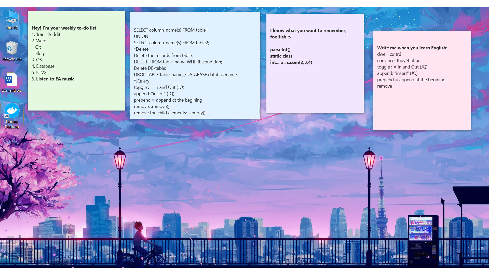

M ake a plan is hard, follow a plan is harder.
Tự đặt ra kế hoạch đã khó, làm theo kế hoạch đó càng khó hơn.
Làm việc có kế hoạch, theo mình là một điều quan trọng nếu bạn muốn đạt được mục đích nào đó. Xuất phát từ việc mình là một người khá nhanh quên, việc gì quan trọng mình đều ghi chú lại, nó cũng dần trở thành thói quen hàng ngày.
Nhưng có vài việc muốn đạt được cần phải có sự nỗ lực trong thời gian dài thì không thể sử dụng ghi chú đơn thuần được. Và ý tưởng của mình là một app nào đó có thể nhắc nhở mình hàng ngày cùng thiết kế khoa học hơn.
Trên là To-Do List hiện tại của mình, sử dụng Chrome extension có tên là Scrumptious
Bên cạnh đó bạn cũng có thể dùng OneNote của Windows 10 để lưu lại các kiến thức.
Cảm ơn đã đọc bài chia sẻ của mình, nếu bạn có ý tưởng hay ho hơn thì mách mình với mình nha ^^